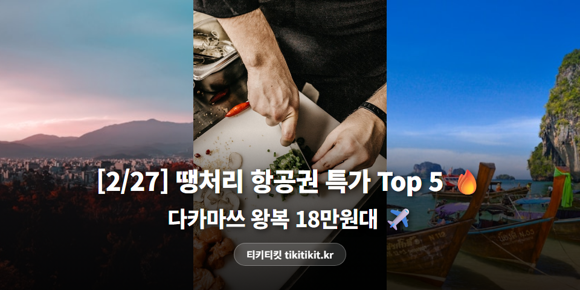

[2/27] 땡처리 항공권 특가 Top 5 🔥 다카마쓰 왕복 18만원대 ✈️
요새 항공권 보는 재미가 쏠쏠하네요 ✈️
오늘도 괜찮은 가격이 꽤 있어서
바로 정리해봤어요.
🏆 2/27 기준 특가 Top 5
🥇 1위
부산 ↔ 다카마쓰 (일본)
에어부산 · 3/31(화)~4/3(금) · 3박 4일
182,500원

🌸 3월 말~4월 초 리쓰린 공원 벚꽃이 압권!
사누키 우동 + 벚꽃 산책, 소도시 힐링 🌸
🥈 2위
부산 ↔ 후쿠오카 (일본)
진에어 · 3/10(화)~3/13(금) · 3박 4일
185,000원

하카타 라멘의 본고장에서 진짜 돈코츠 한 그릇 🍜
🥉 3위
인천 ↔ 푸켓 (동남아)
아시아나항공 · 3/2(월)~3/5(목) · 3박 4일
199,000원

4위
인천 ↔ 사이판 (태평양)
제주항공 · 3/4(수)~3/7(토) · 3박 4일
199,000원

마나가하 섬에서 투명한 바다 속으로 🐠
5위
인천 ↔ 하코다테
제주항공 · 3/8(일)~3/12(목) · 4박 5일
199,000원

※ 유류할증료/텍스 포함 왕복 총액 기준
※ 좌석이 빠지면 가격이 바뀌거나 사라질 수 있어요.
*가격 데이터 출처: 티키티킷(tikitikit.kr)
💡 에디터 픽 : 4위 인천-사이판
인천-사이판 왕복 199,000원!
제주항공 직항으로
3박 4일 알찬 일정입니다.
마나가하 섬에서 투명한 바다 속으로 🐠
그로토 다이빙 포인트는 세계 TOP 급!
왕복 19만9,000원에 이 정도면
가족 여행으로도 최고의 선택.
다양한 일정이 열려 있으니
마음에 드는 날짜를 골라보세요!
👉 다른 날짜도 궁금하다면 tikitikit.kr에서 확인해보세요.
📌 인천 출발은 뭐가 있을까?
이번 인천 출발 최저가 라인업!
(tikitikit.kr 기준 실시간 최저가)

✈️ 푸켓 199,000원 (아시아나항공)
3/2~3/5 · 3박 4일 가성비 여행!

✈️ 사이판 199,000원 (제주항공)
3/4~3/7 · 3박 4일 투명 바다 힐링 여행!

✈️ 하코다테 199,000원 (제주항공)
3/8~3/12 · 4박 5일 가성비 여행!

✈️ 방콕 210,000원 (타이비엣젯항공)
3/11~3/15 · 4박 5일 맛집 투어 완전정복!

✈️ 마츠야마 229,000원 (제주항공)
4/27~4/29 · 2박 3일 일본 소도시 여행!

✈️ 홍콩 229,000원 (홍콩항공)
3/4~3/7 · 3박 4일 가성비 여행!
✨ 이번 주 항공권 꿀팁
🌸 벚꽃 시즌 항공권은 2~3주 전에 풀리는 땡처리가 가장 저렴합니다. 지금이 딱 그 타이밍!
🏖️ 동남아 여행 TIP: 3~5월은 건기에 해당하는 지역이 많아 여행 적기입니다!
🏝️ 괌·사이판 꿀팁: 면세 쇼핑 + 해양 액티비티까지, 짧은 비행에 리조트 풀코스!
오늘 소개한 특가 외에도
매일 새로운 땡처리 항공권이 올라오고 있어요.
혹시 원하는 날짜나 목적지가 따로 있다면
한번 들러서 확인해보세요 😊
#티키티킷 #땡처리항공권 #특가항공권 #다카마쓰여행 #후쿠오카여행 #푸켓여행 #사이판여행 #하코다테여행 #해외여행꿀팁